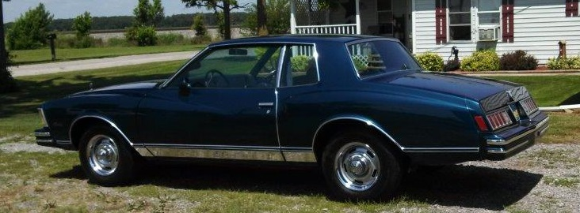

About Me

My name is Scott Buehrer and I am an IT Technician for the City of Bryan. I am a techie professionally and by nature. When I am not working on something nerdy I like to go fishing, preferably from a boat. I am not a very good fisherman by any means but I do enjoy it. Some of my favorite places to fish and type of fish are:
- Turkey Foot Creek - Crappie
- Auglaize River - Crappie
- Devils Lake - Blue Gill
- Cold Water Lake - Bluegill and Bass
- Jacksonville Beach - too many to list
I also spent a couple years restoring a '78 Monte Carlo that was from my childhood, probably one of my greatest achievements, besides my family.
